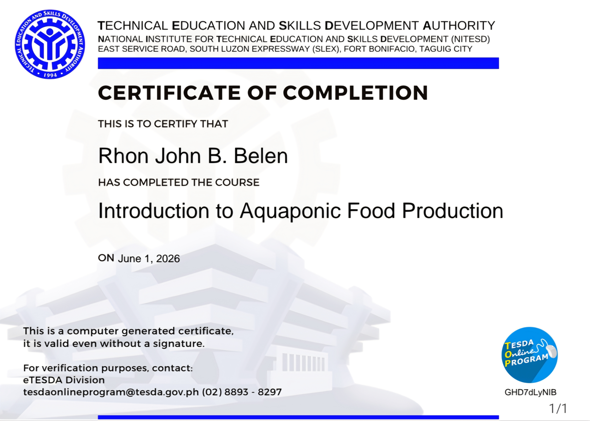
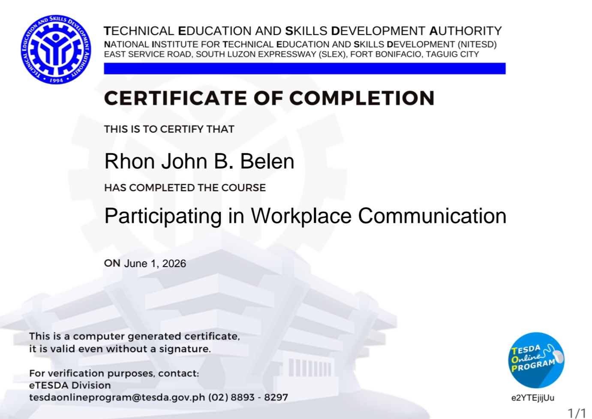
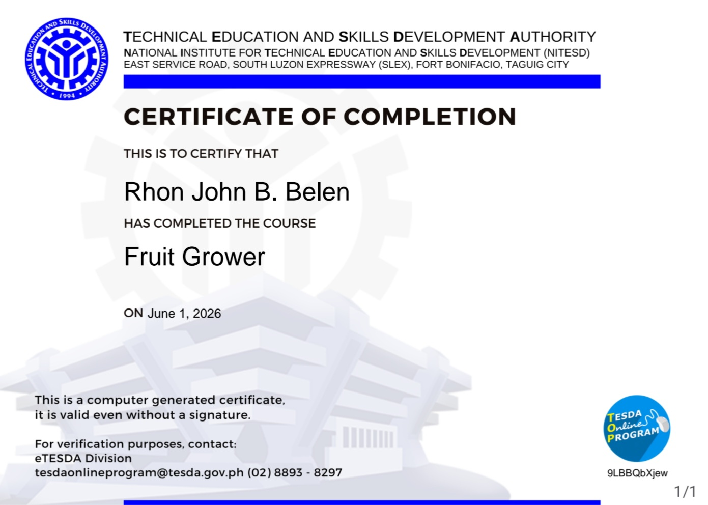
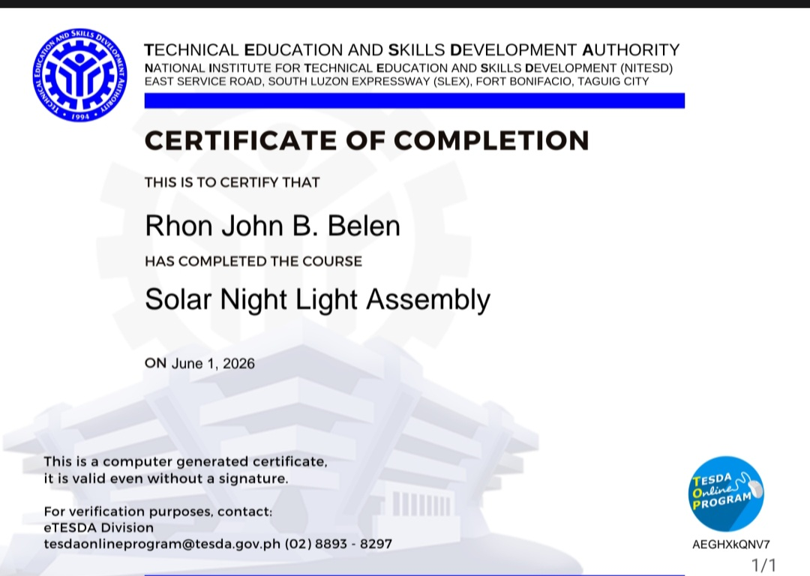

Certificates

Introduction To Aquatic Food Production
An online TESDA course that covers the core principles of managing aquaculture facilities and raising healthy fish for sustainable seafood production.

Participating in Workplace Communication
An online TESDA course that teaches essential skills for exchanging clear information, following instructions, and collaborating effectively within a professional team.

Fruit Grower
An online TESDA course focused on the essential techniques for planting, maintaining, harvesting, and marketing high-yield fruit crops successfully.

Solar Night Light Assembly
An online TESDA course providing foundational skills in assembling, wiring, and testing solar-powered lighting systems for sustainable residential use.

Start And Improve Your Business
An online TESDA course that trains aspiring entrepreneurs to launch, manage, and scale a small enterprise using practical business strategies.